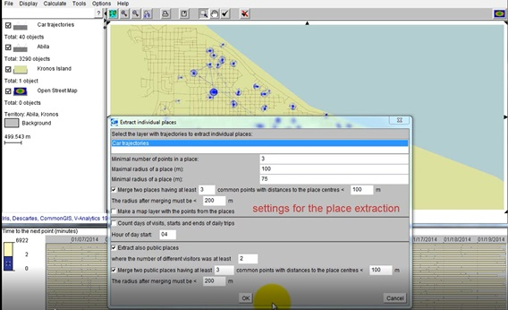
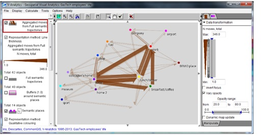

1.Overview
This assignment is part of VAST Challenge 2021 - Mini Challenge 2 (“MC 2”) The challenge scenario is given as follows:
“In January, 2014, the leaders of GAStech are celebrating their new-found fortune as a result of the initial public offering of their very successful company. In the midst of this celebration, several employees of GAStech go missing. An organization known as the Protectors of Kronos (POK) is suspected in the disappearance, but things may not be what they seem.”
As part of Mini-Challenge 2, visual analytics was performed on i) employee movement using vehicle gps data; ii) credit card transactions; and iii) loyalty card usage data. From this, visual analysis identified anomalies and suspicious behaviours. This data will be used by the law-enforcement agents to get to the bottom of the case!
The visual analysis aims to provide answers to the following questions posed by MC-2: -
Identify the most popular locations, and when they are popular. What anomalies do you see? What corrections would you recommend to correct these anomalies?
What discrepancies between vehicle, credit, and loyalty card data do you find?
Can you infer the owners of each credit card and loyalty card? What is your evidence? Where are there uncertainties in your method? Given the data sources provided, identify potential informal or unofficial relationships among GASTech personnel.
Do you see evidence of suspicious activity? Identify 1- 10 locations where you believe the suspicious activity is occurring, and why.
The assignment report was written using R Markdown in Distill format. The report is published on Nelify. The data is available on Github.
2.Literature Review
The literature review looks at 3 approaches used to solving MC-2 in 2014. Specifically, a review was done on the data visualisation approach and gaps were identified for i) alternative visual analytics could be used to enhance the user experience; and ii) identification of R packages that could be replicate useful visuals .
- Entry - CSU-Zhao-MC2 , VAST Challenge 2014, Mini-Challenge 2

Figure 2.1: From Top Left: Combined Visualisation for Analysis, RadViz and Parallel Coordinates and Matrix Visualisation
Zhao et. al. used D3, MYSQL and Excel to produce the visual for analytics. The team approached the challenge by i) segmenting car-tracking data and tracking start and end points using temporal colour coding on the map; ii) utilizing consumption data to locate precise positions; and iii) created a map by merging multiple layers – tourist map, with the road-network, location and legend layers.
For visual analysis, the team used i) RadViz Tool; ii) PMViz Tool; and iii) SGGVIz Tool. The RadViz was used to cluster consumer places and employees with common consumptions habits. PMViz was used for Parallel Coordinates and Matrix Visualisation to identify when people were together, by time, place and fleshes out events that happened when running through a timeseries. SGGViz was used to produce a Scatter view and Gantt Chart & GIS view. The visualisations were combined and cross-referenced with interactivity to explore and analyse the data.
The visualisations used are diverse to understand behaviours. Specifically, RadViz with clustering identifies consumption habit trends of employees. While the Parallel Coordinates and Matrix identifies behaviours. The map traces activity and travel route. These visualisations flesh out the given data neatly. Lastly, the gantt chart helps place the visual in a time-series. Notably, to build the map, the team constructed used 4 layers (legend, location, road-network and tourist map). This was useful when mapping the gps data to get a sense of the routes taken and locations visited.
Reflecting on their approach, it would be useful to construct the tourist map with the various layers. A search done recommended using raster, sf and tmaps packages in R to accomplish this. For timeseries data, Gantt charts and the timetk package will be explored. Aside, instead of using Radviz in R, the visNetwork package could be useful to build nodes and edges to understand the connections between locations and credit card usage. visNetwork has interactivity for the user to explore underlying relationships. Another approach could be to use a correlation matrix to relate the employees to each other.
- Entry - Purdue-Guo-MC2 , VAST Challenge 2014, Mini-Challenge 2

Figure 2.1: Visual Analysis Interactive Visual
Guo et. al. used Dodeca-Rings Map together with a temporal chart and social relationship matrix. The team used HTML5, CSS, SVG, JavaScripts, jQuery, PHP, MySQL and D3 to query, compute, serve and visualize data. The visual is interactive and helps the user understand the activity in a time-series along with the relationships between the employees. The dodecagons flesh out the events on the map. All the visuals are inked for the user to differentiate events.
 Figure 2.3: Tooltip for Dodecagons
Figure 2.3: Tooltip for Dodecagons
The dodecagons also have a tooltip feature which goes into deeper details. However, a lot of detail is shown within a tool tip, it could have been more useful to showcase the details in another window below the dodeca-ring map for exploration. In addition, while the Dodeca rings are neater, for persons unfamiliar with Dodecans, it would be challenging to interpret.
 Figure 2.4:Temporal Chart and Social Relationship Matrix
Figure 2.4:Temporal Chart and Social Relationship Matrix
The temporal chart and social relationship matrix are useful to understand how persons related to one another and the car travel in a timeseries. There are also options to filter the within the temporal chart that makes the interaction easy and allow the user to dig deeper.
The inking used by the team is particularly attractive and easy to interpret and visualize data. Similar to Guo et. al. in (a), a time-series was used along with mapping of gps data on the map. Instead of using Radviz, the team used a correlation matrix. Reflecting on how the correlation matrix looks, it could be more useful to leverage a network graph instead. That could be more visually useful to spot clusters and relationships between people and locations. Furthermore, the interactive provides additional investigation of the data. Aside, detail to understand movement on the map is useful. In R, a possibility could be to use data tables that allow filtering of data. In addition, using the crosstalk package would link charts to the data tables.
- Entry - FIAIS-Andrienko-MC2 , VAST Challenge 2014, Mini-Challenge 2 FIAIS-Andrienko et. al. used V-Analytics to develop the visual. The motivation for their visual seems to be on leveraging queries to explore the date.
 Figure 2.5: Query Done on Visual
While this is great for exploration, it is not very beneficial when the user shows this to the rest of the investigation team as the data is not forthcoming and the team will have to continuously explore. This is good for deep investigation, but, not as beneficial for visual analytics to identify underlying trends given the continuous need to query. A good mix would be i) a visualisation that already fleshes out certain abnormalities; and ii) has exploration functions for each visual for the user to explore second-level details. Users unfamiliar with V-analytics may be overwhelmed by the options and the many legends and visuals used. For example, the screen shot below of geospartial data has a lot of going on and is not guided enough for the user to follow. As a recommendation, the map layout could be used given that it is intuitive to many, along with filter options for the vehicles or persons driving.
 Figure 2.6: Using Geospartial Data
Lastly, the tabular representation of data is not a good idea when using visualisation as users will find it difficult to read across columns and rows. The colours are useful but it can be better represented using a temporal chart or Gant chart.
 Figure 2.7: Data Visualisation Using a Table
Figure 2.7: Data Visualisation Using a Table
To bridge the visual analytics gap, it could be useful to use the tmaps in R to plot individual routes taken and understand each user’s travel patterns. In addition, crosstalk could be used to link visuals to tables, vis-à-vis creating a query function. It would be useful for the data tables using crosstalk to have a filter function.
- Takeaways Key takeways from the above review include:-
Visualisation used should be intuitive for the user to explore;
Interactivity, data tables and tooltops are essential to explore second level details and must be used while remaining neat;
To understand the data, leverage various charts (e.g use Gantt chart for time-series, and tmaps for gps data). Aside from interactivity, link the charts together to gather deeper insights.
Tell the story and do not convolute the charts with too many details and query options;
Consider using network visualisations to identify relationships;
Inking will be essential to spotting trends given the number of data points.
3. Approach and Packages
In this assignment, both static and interactive visuals were created to explore and derive insights from the data. Specifically, bar charts, box-plots, heatmaps, visual mapping and network visuals were used.
The following packages were installed for the assignment: -
Igraph - For creating and manipulating graphs and analysing network
visNetwork - visNetwork is an R package for network visualization
lubridate - To work with dates and times
DT - R data objects (matrices or data frames) can be displayed as tables on HTML pages, and DataTables provides filtering, pagination, sorting, and many other features in the tables
Ggiraph - A htmlwidget and a ggplot2 extension. It allows ggplot graphics to be animated
Plotly - Package for creating interactive web-based graph
tidyverse - An opinionated collection of R packages designed for data science. All packages share an underlying design philosophy, grammar, and data structures
Raster - Reading, writing, manipulating, analyzing and modeling of spatial data. The package implements basic and high-level functions for raster data and for vector data operations such as intersections
sf - Support for simple features, a standardized way to encode spatial vector data. Binds to ‘GDAL’ for reading and writing data, to ‘GEOS’ for geometrical operations, and to ‘PROJ’ for projection conversions and datum transformations
tmap - tmap package is a brand new easy way to plot thematic maps in R
clock - For working with date-times. It is packed with features, including utilities for: parsing, formatting, arithmetic, rounding, and extraction/updating of individual components
Rgdal - Bindings for the ‘Geospatial’ Data Abstraction Library
Dplyr - Provides a set of tools for efficiently manipulating datasets in R
Sugrrants - Supporting graphs for analysing time series. Description. Provides ‘ggplot2’ graphics for analysing time series data. It aims to fit into the ‘tidyverse’ and grammar of graphics framework for handling temporal data
Hms - Provides a simple class for storing durations or time-of-day values and displaying them in the hh:mm:ss format
Crosstalk – Enhances the htmlwidgets package. It extends htmlwidgets with a set of classes, functions, and conventions for implementing cross-widget interactions (currently, linked brushing and filtering)
timetk - Consolidates and extends time series functionality from packages including ‘dplyr’, ‘stats’, ‘xts’, ‘forecast’, ‘slider’, ‘padr’, ‘recipes’, and ‘rsample’
tidygraph - A huge package that exports 280 different functions and methods. It more or less wraps the full functionality of igraph in a tidy API giving you access to almost all of the dplyr verbs plus a few more, developed for use with relational data
Ggraph - An extension of the ggplot2 API tailored to graph visualizations and provides the same flexible approach to building up plots layer by layer
Ggrepel - Implements functions to repel overlapping text labels away from each other and away from the data points that they label
Htmltools – Makes it easy to customize the user interface (UI) of any Shiny or R Markdown project by using R code to generate custom HTML (including JavaScript and CSS).
The data sets will be tackled individually to identify trends, suspicious and erratic behavior, and discover relationships. Thereafter, visualisations will be pieced together to address MC-2 questions.
4. Data Preparation
- Install and Load Packages The following is done in RStudio using Rmarkdown.
#Install and Launch R Packages
packages = c('igraph','visNetwork','lubridate', 'DT', 'ggiraph', 'plotly', 'tidyverse', 'raster', 'sf', 'tmap', 'clock', 'rgdal','dplyr',
'hms', 'crosstalk','timetk', 'tidygraph', 'ggraph', 'ggrepel', 'htmltools', 'sugrrants')
library(ggplot2)
for (p in packages){
if (!require(p, character.only = T)){
install.packages(p)
}
library(p, character.only = T)
}
- Importing Data
The files provided (car-assignements, cc_data, loyalty_data and gps) are imported.Two other files were created in excel for data exploration to understand if it was a useful format to have the data in for creating visuals. These files are All_Combined2 and All_Combined3. Specifically, All_Combined2 merges cc and loyalty card data in the following format “Loyalty Date, LoyaltyLocation, Loyalty Price, LoyaltyNumber, CreditCardTimerstamp, Location, CreditCardPrice, CardNumber, CreditCardDate. All_Combined4 merges the cc_data and loyalty_card data in the following table form “Date, Location, Price, CC.Loyalty, CC.Loyalty.Type”.
#Importing car-assignment data
car_assign<- read_csv("data/car-assignments.csv")
credit_card<- read_csv("data/cc_data.csv")
gps <- read_csv("data/gps.csv")
loyalty <- read_csv("data/loyalty_data.csv")
combined_trans <-read_csv("data/All_Combined2.csv")
combined_trans_pivot <- read_csv("data/All_Combined4.csv")
- Data Cleaning
The steps below flesh out the data cleaning process.
For each data set, glimpse(“data set name”) was used to identify the format of the data.Thereafter, the following was performed :-
For columns that contain numbers that are categorical (for example, car id, credit card number and loyalty number), as_factor is used to convert them to factor
Columns that contain timestamp, date and time are converted to
data type Columns that contain characters are checked to be in
and columns with continuous types are checked to be in Empty rows are checked
The cleaned data sets are fleshed below the code chunk.
#Clean Data
#1. For Car_Assign, Truck Drivers have no Car Id. Change 'NA' to '0' and CarID used as_factor
car_assign[is.na(car_assign)] = 0
car_assign$CarID <- as_factor(car_assign$CarID)
car_assign_clean <- car_assign
#2. Credit Card Timestamp data needs to be in the proper attribute
credit_card$timestamp <- date_time_parse(credit_card$timestamp,
zone = "",
format = "%m/%d/%Y %H:%M")
credit_card$last4ccnum <- as_factor(credit_card$last4ccnum)
credit_card_clean <- credit_card #save data set as credit_card_clean
#The credit card timestamp data can be further split
credit_card_split <- credit_card_clean %>%
mutate(year = format(timestamp,"%m/%d/%Y"),
time = format(timestamp,"%H:%M:%S"))
credit_card_split$year <- date_parse(credit_card_split$year,
format = "%m/%d/%Y")
credit_card_split$time <- as.hms(credit_card_split$time)
#3. GPS Timestamp needs to be in the proper attribute
gps$Timestamp <- date_time_parse(gps$Timestamp,
zone = "",
format = "%m/%d/%Y %H:%M:%S")
gps$id <- as_factor(gps$id) #id should be a factor and not continuous numerical format
gps_clean <- gps #save data set as gps_clean
#4. Loyalty Card Data - timestamp needs to be in the proper attribute and loyalty number as factor
loyalty$timestamp <- date_parse(loyalty$timestamp,
format = "%m/%d/%Y")
loyalty$loyaltynum <- as_factor(loyalty$loyaltynum)
loyalty_clean <- loyalty #save data set as loyalty_clean
#4. For exploration - combined loyalty and credit card data.
#Sort of the date and time formats
combined_trans$LoyaltyDate <- date_parse(combined_trans$LoyaltyDate,
format = "%m/%d/%Y")
combined_trans$CreditCardDate <- date_parse(combined_trans$CreditCardDate,
format = "%m/%d/%Y")
combined_trans$CreditCardTimestamp <- date_time_parse(combined_trans$CreditCardTimestamp,
zone = "",
format = "%m/%d/%Y %H:%M")
#Identifiers should be in fct format
combined_trans$LoyaltyNumber <- as_factor(combined_trans$LoyaltyNumber)
combined_trans$CardNumber<- as_factor(combined_trans$CardNumber)
combined_trans$LoyaltyNumber<- as_factor(combined_trans$LoyaltyNumber)
#5. Pivoted data
combined_trans_pivot$Date <- date_parse(combined_trans_pivot$Date,
format = "%m/%d/%Y")
combined_trans_pivot$CC.Loyalty <- as_factor(combined_trans_pivot$CC.Loyalty)
combined_trans_pivot$Location <- as_factor(combined_trans_pivot$Location)
# 6. Looking at the cleaned data sets
glimpse(loyalty_clean)
Rows: 1,392
Columns: 4
$ timestamp <date> 2014-01-06, 2014-01-06, 2014-01-06, 2014-01-06, ~
$ location <chr> "Brew've Been Served", "Brew've Been Served", "Ha~
$ price <dbl> 4.17, 9.60, 16.53, 11.51, 12.93, 4.27, 11.20, 15.~
$ loyaltynum <fct> L2247, L9406, L8328, L6417, L1107, L4034, L6110, ~glimpse(credit_card_clean)
Rows: 1,490
Columns: 4
$ timestamp <dttm> 2014-01-06 07:28:00, 2014-01-06 07:34:00, 2014-0~
$ location <chr> "Brew've Been Served", "Hallowed Grounds", "Brew'~
$ price <dbl> 11.34, 52.22, 8.33, 16.72, 4.24, 4.17, 28.73, 9.6~
$ last4ccnum <fct> 4795, 7108, 6816, 9617, 7384, 5368, 7253, 4948, 9~glimpse(gps_clean)
Rows: 685,169
Columns: 4
$ Timestamp <dttm> 2014-01-06 06:28:01, 2014-01-06 06:28:01, 2014-01~
$ id <fct> 35, 35, 35, 35, 35, 35, 35, 35, 35, 35, 35, 35, 35~
$ lat <dbl> 36.07623, 36.07622, 36.07621, 36.07622, 36.07621, ~
$ long <dbl> 24.87469, 24.87460, 24.87444, 24.87425, 24.87417, ~glimpse(combined_trans)
Rows: 1,490
Columns: 9
$ LoyaltyDate <date> 2014-01-06, 2014-01-06, 2014-01-06, 201~
$ LoyaltyLocation <chr> "Brew've Been Served", "Brew've Been Ser~
$ LoyaltyPrice <dbl> 4.17, 9.60, 16.53, 11.51, 12.93, 4.27, 1~
$ LoyaltyNumber <fct> L2247, L9406, L8328, L6417, L1107, L4034~
$ CreditCardTimestamp <dttm> 2014-01-06 07:28:00, 2014-01-06 07:34:0~
$ Location <chr> "Brew've Been Served", "Hallowed Grounds~
$ CreditCardPrice <dbl> 11.34, 52.22, 8.33, 16.72, 4.24, 4.17, 2~
$ CardNumber <fct> 4795, 7108, 6816, 9617, 7384, 5368, 7253~
$ CreditCardDate <date> 2014-01-06, 2014-01-06, 2014-01-06, 201~glimpse(combined_trans_pivot)
Rows: 2,882
Columns: 4
$ Date <date> 2014-01-06, 2014-01-06, 2014-01-06, 2014-01-06, ~
$ Location <fct> Brew've Been Served, Brew've Been Served, Hallowe~
$ Price <dbl> 4.17, 9.60, 16.53, 11.51, 12.93, 4.27, 11.20, 15.~
$ CC.Loyalty <fct> Loyalty, Loyalty, Loyalty, Loyalty, Loyalty, Loya~- Merging Data sets The cc and loyalty data was merged and imported earlier. As such, it will not be done in R. However, R is capable of doing this by using a right join and pivoting the data table. Please refer to this linkfor more information.
Next, given that CarID is tagged to employee name, GPS data is merged with Car Assignment data as follows:
#Merge GPS with car assignment. Merge on CarId
Employee_travel <- merge(gps_clean, car_assign_clean, by.x="id", by.y="CarID")
names(Employee_travel)[names(Employee_travel) == "id"] <- "CarID"
Employee_travel$NameTitle <- paste(Employee_travel$Name, Employee_travel$CurrentEmploymentTitle)
glimpse(Employee_travel)
Rows: 613,077
Columns: 10
$ CarID <fct> 1, 1, 1, 1, 1, 1, 1, 1, 1, 1, 1, 1, 1~
$ Timestamp <dttm> 2014-01-09 17:50:36, 2014-01-07 18:5~
$ lat <dbl> 36.05902, 36.06416, 36.06071, 36.0725~
$ long <dbl> 24.88247, 24.87959, 24.88340, 24.8666~
$ LastName <chr> "Calixto", "Calixto", "Calixto", "Cal~
$ FirstName <chr> "Nils", "Nils", "Nils", "Nils", "Nils~
$ Name <chr> "Nils Calixto", "Nils Calixto", "Nils~
$ CurrentEmploymentType <chr> "Information Technology", "Informatio~
$ CurrentEmploymentTitle <chr> "IT Helpdesk", "IT Helpdesk", "IT Hel~
$ NameTitle <chr> "Nils Calixto IT Helpdesk", "Nils Cal~